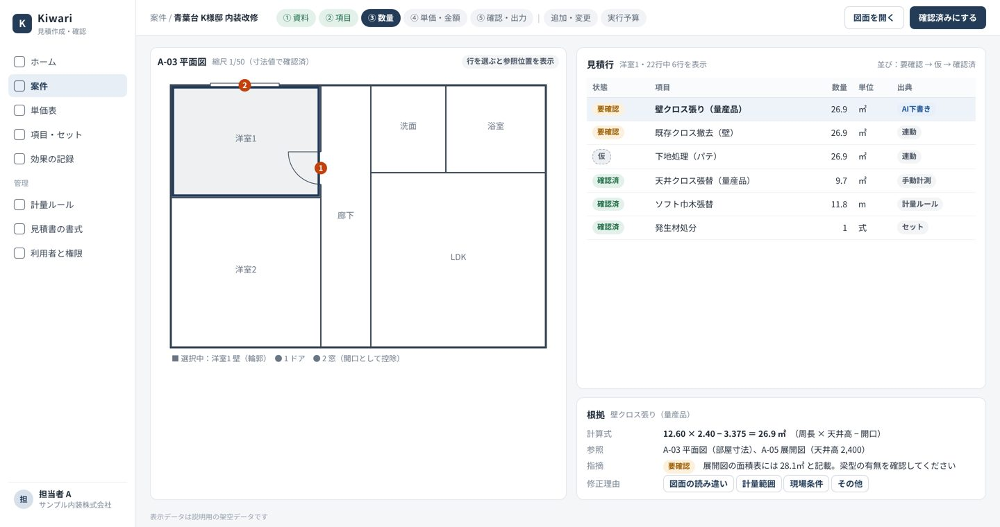
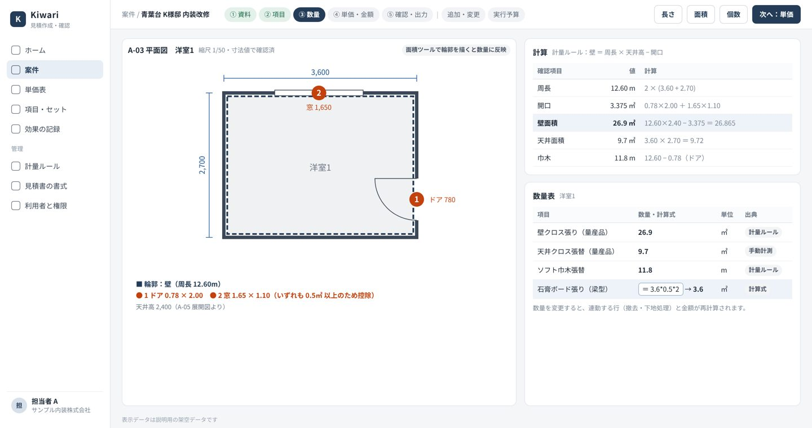

内装・リフォームの見積を、
図面から見積書まで一つの画面で。
Kiwari（キワリ）は、図面や現地調査の記録から、項目・数量・単価をそろえた見積書と実行予算の作成を支援するクラウドサービスです。AIが下書きし、担当者が根拠を確かめて確定します。

画面はイメージです。表示データは説明用の架空データです。
見積づくりの、こんな負担を減らします
見積は受注の入口ですが、拾い出しと転記に時間がかかり、担当者によって漏れや書き方に差が出やすい業務です。
拾い出しに時間がかかる
図面を見ながら数量を拾い、Excelに打ち込む作業が、夜や休日にずれ込みがちです。
項目の漏れが起きる
養生や処分など図面に描かれない項目は、経験に頼って思い出すしかありません。
根拠が人の頭の中にある
数量や単価の根拠が残らず、変更や引継ぎのたびに確認し直すことになります。
Kiwari の特長
使い慣れた内訳書のかたちのまま、下書きと確認を速くします。
見積書が、そのまま作業画面です
画面の中心は、Excelの内訳書と同じ並びの見積表です。自動で入った行は「仮」と表示され、担当者は確定するか直すかを選ぶだけです。合計金額はいつでも画面の上に表示されます。
- 似た過去の見積をもとに始められます
- 工事内容を選ぶと、関連する項目をまとめて展開します
- 漏れやすい項目を候補として示します
数量の根拠を、図面の上で確かめられます
行を選ぶと、図面のどこから拾った数量かを表示します。長さ・面積・個数は図面上で測り、計算式とともに行に残します。計算は設定したルールで行い、AIには計算させません。
- 壁は「周長×天井高−開口」など、数え方を会社ごとに設定
- 図面の表と数量が合わない行を知らせます
- Excelの拾い表もそのまま取り込めます

自社の単価と書式で、見積書を出せます
単価は自社の単価表から候補を示し、出どころと有効期限を行ごとに残します。諸経費・端数・消費税は会社の設定で計算し、いつもの書式のExcel・PDFで出力します。
- 仮の行と前提条件・除外事項を一覧で添付
- 承認した版は固定し、変更は新しい版として管理

追加・変更見積と実行予算へ 順次提供
承認した見積をもとに、追加・変更の増減明細と、工種別の原価・粗利（実行予算）を作成します。同じ見積表の表示を切り替えるだけで確認できます。

| 分類 | 主な機能 |
|---|---|
| 資料 | 図面（PDF・画像）の読込と縮尺確認、現地調査の写真・メモ・録音の整理、Excel拾い表・過去見積の取込 |
| 項目 | 自社の項目と別名の管理、セット展開、漏れ候補の提示、AIによる項目候補 |
| 数量 | 図面上での計測、計量ルールと計算式、AIによる数量の下書き |
| 単価・金額 | 自社単価表、単価の出どころの記録、諸経費・端数・消費税の計算 |
| 確認・出力 | 自動チェック、承認と版の固定、指定書式のExcel・PDF出力 |
| 展開 順次提供 | 追加・変更見積、実行予算（原価・粗利） |
| 管理 | 修正の記録、作業時間の記録、利用者と権限、操作履歴 |
AIは候補を示す役割です。数量と金額の計算は設定したルールで行い、見積の確定は担当者と承認者が行います。
使い方
見積1件の流れです。どの段階からでも、手入力やExcelの取込で進められます。
資料を入れる
図面、現地調査の写真やメモ、Excelの拾い表を案件に追加します。
下書きを作る
似た過去の見積、図面からの自動下書き、拾い表の取込から選びます。
確かめて直す
「仮」の行と、確認してほしい行を順に確かめ、必要なら図面で測り直します。
承認する
承認者が金額と粗利、仮の行を確認して承認します。版は固定されます。
見積書を出す
自社や元請の書式で、Excel・PDFの見積書を出力します。
料金
月額の利用料と、導入時の初期費用で構成します。金額はすべて税別です。
ライト
- 見積 月10件まで
- 利用者 3名まで
- メールサポート
スタンダード
- 見積 月30件まで
- 利用者 10名まで
- 追加・変更見積、実行予算
- メール・オンラインサポート
プロ
- 見積 月80件まで
- 利用者 無制限
- 元請別の書式を複数登録
- 専任担当によるサポート
| 初期導入費 | 300,000円〜（単価表・項目・見積書式の設定、過去見積の取込、操作研修を含みます） |
|---|---|
| 件数の超過 | 1件あたり 2,000円 |
| 契約期間 | 1年（以後、1年ごとの更新） |
工事の種類や利用人数に合わせてお見積りします。詳しくはお問い合わせください。
導入支援とサポート
使い始めの設定から、日々の運用まで支援します。
導入設定
お使いの単価表、項目の呼び方、見積書の書式を Kiwari に設定します。過去の見積を取り込み、再計算して金額が合うことを確認します。
操作研修
担当者・承認者・管理者それぞれに、実際の案件を使った研修を行います。操作マニュアルをお渡しします。
運用サポート
操作の質問、単価表や書式の変更、不具合の対応を、メールとオンラインでお受けします。
データの取り扱い
会社ごとのデータは分けて保存し、他社から参照できません。お預かりした図面や見積を、AIの学習には使いません。
よくある質問
どんな工事に向いていますか。
内装仕上工事と住宅・店舗・事務所のリフォーム工事を対象にしています。対応する工事の種類は、導入時にご相談のうえ設定します。
AIが出した数量や金額は、そのまま使えますか。
そのままは使わず、担当者が確認する前提です。AIが入れた行には「仮」と表示し、根拠の位置と計算式を示します。図面の状態によっては下書きを作れない場合があり、その場合は図面上で計測して入力します。
今使っているExcelの見積書式は使えますか。
はい。導入時に自社や元請の書式を設定し、同じ形で出力できるようにします。
図面がなく、現地調査だけの案件でも使えますか。
使えます。写真・メモ・録音と過去の見積から下書きを作り、数量は手入力または簡易な計測で入力します。
データはどこに保存されますか。
国内のクラウド環境に保存します。保存期間と削除の方法は、契約時に取り決めます。
会社概要
| 会社名 | 福富建設株式会社 |
|---|---|
| 代表者 | 代表取締役 施 孝勇 |
| 所在地 | 〒110-0008 東京都台東区池之端一丁目1番1号 池之端ビル7階 |
| 設立 | 2022年6月 |
| 資本金 | 4,000万円 |
| 事業内容 | 内装工事業、建設業向けソフトウェアの提供 |
| サービス | Kiwari（内装・リフォーム工事の見積作成支援） |
| 電話 | 03-3527-3561 |
| 連絡先 | info@kiwari-ai.jp |
お問い合わせ・資料請求
導入のご相談、デモのご希望、料金のお見積りは、メールでお気軽にご連絡ください。
会社名・ご担当者名・主な工事の種類をお書き添えください。